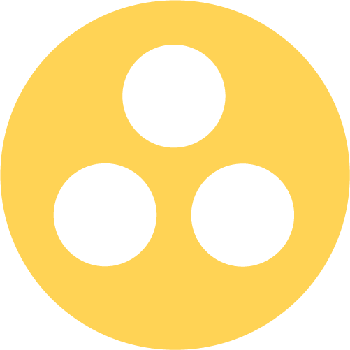
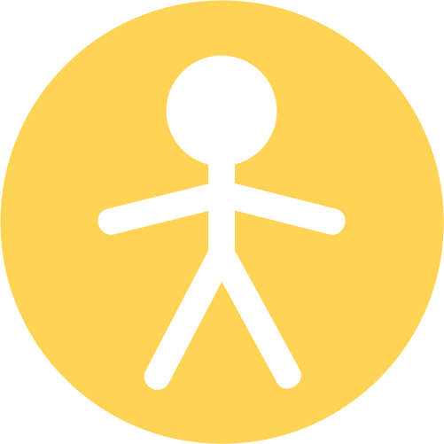
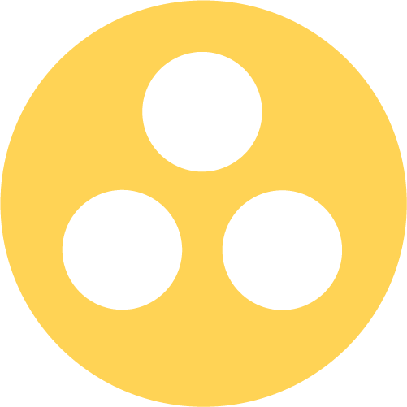
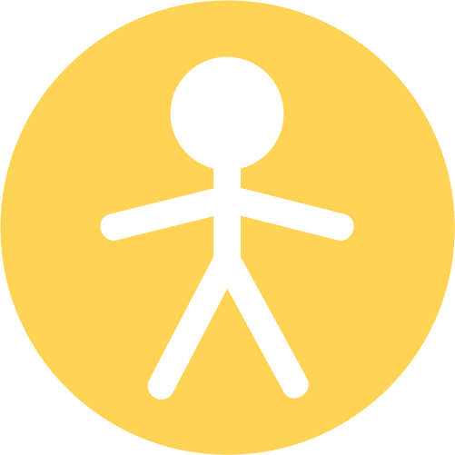
 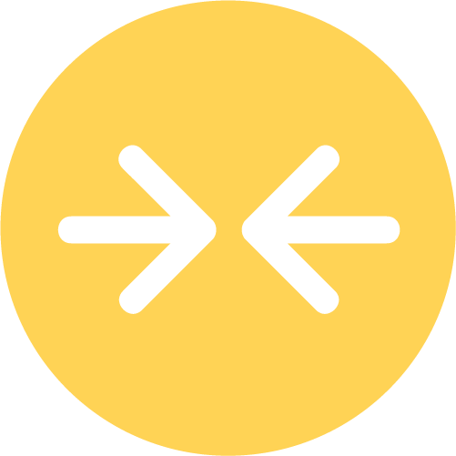
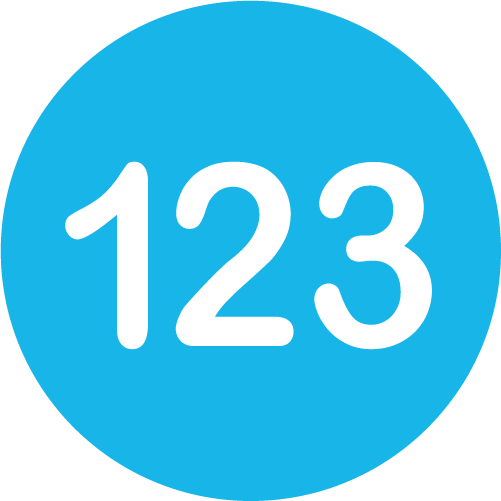
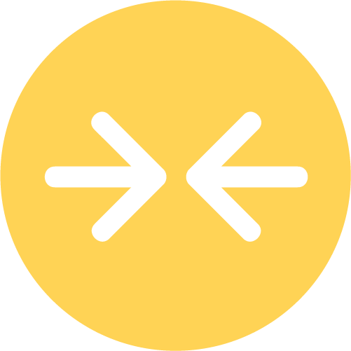
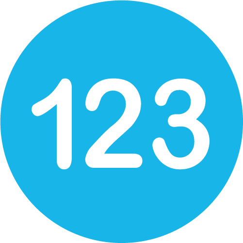

Home Page
I organized the information from the current website into digestible sections and laid out the sections in a logical sequence from top to bottom. Ordering the content in this way helps guide the user down the page and makes it easier for them to take in all the information.
ORIGINAL
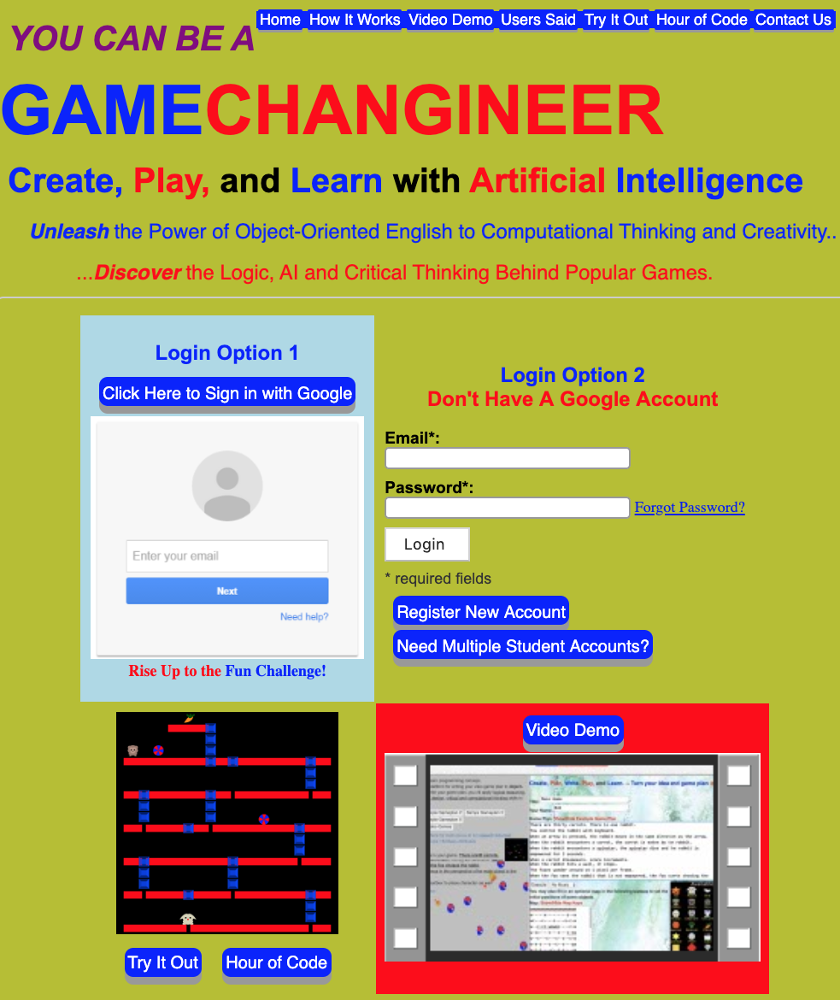REDESIGN
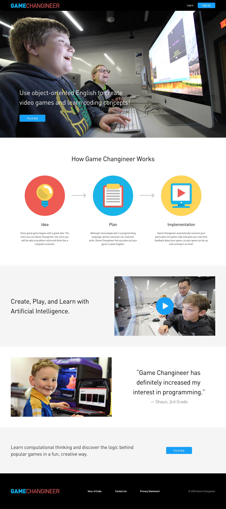REDESIGN
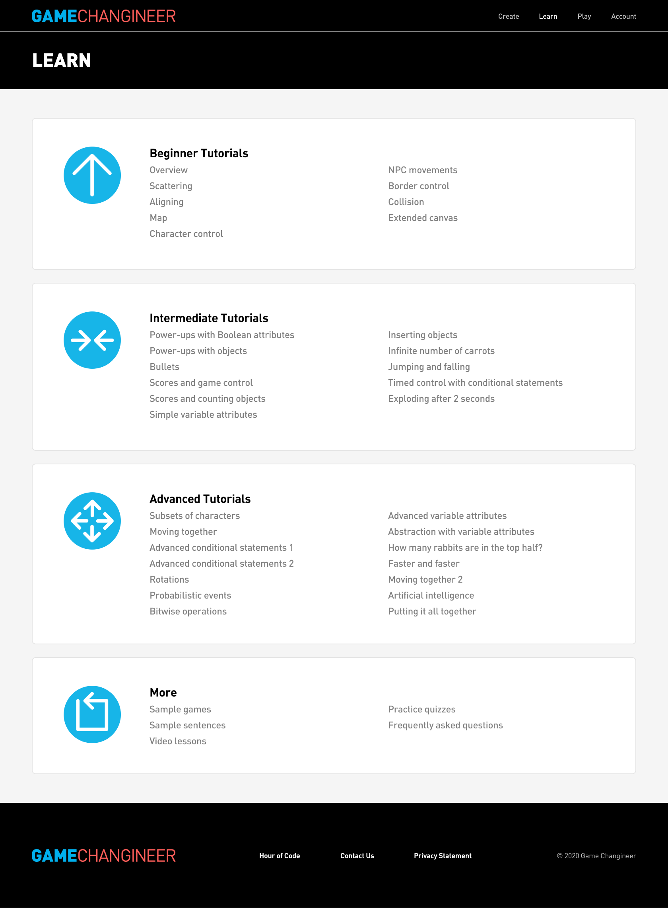ORIGINAL
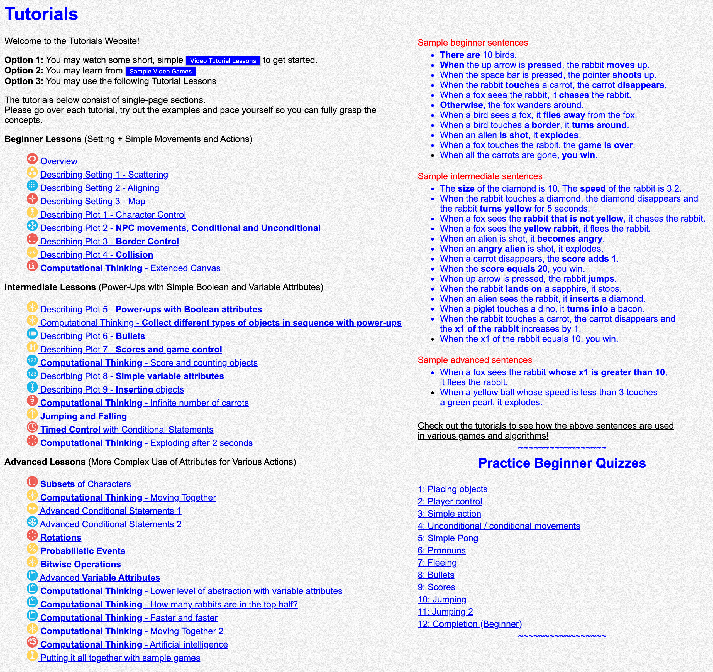Learn
I improved the visual hierarchy of the tutorials page by giving different skill levels individual panels and by increasing the contrast between titles and subtitles.
Create
On the original website, instructional material is included in the same window as the programming form. I separated all the reference material from the programming form and divided the reference material into “Instructions,” “Word Bank,” and “Example Plans.” This way, users won’t have to search both sides of their screen and can quickly find the information they need to build their games.
ORIGINAL
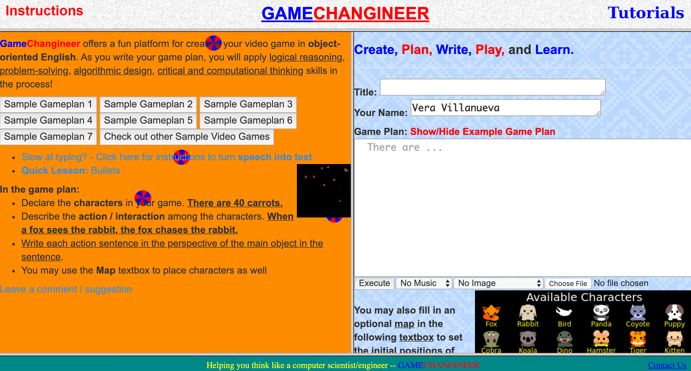REDESIGN
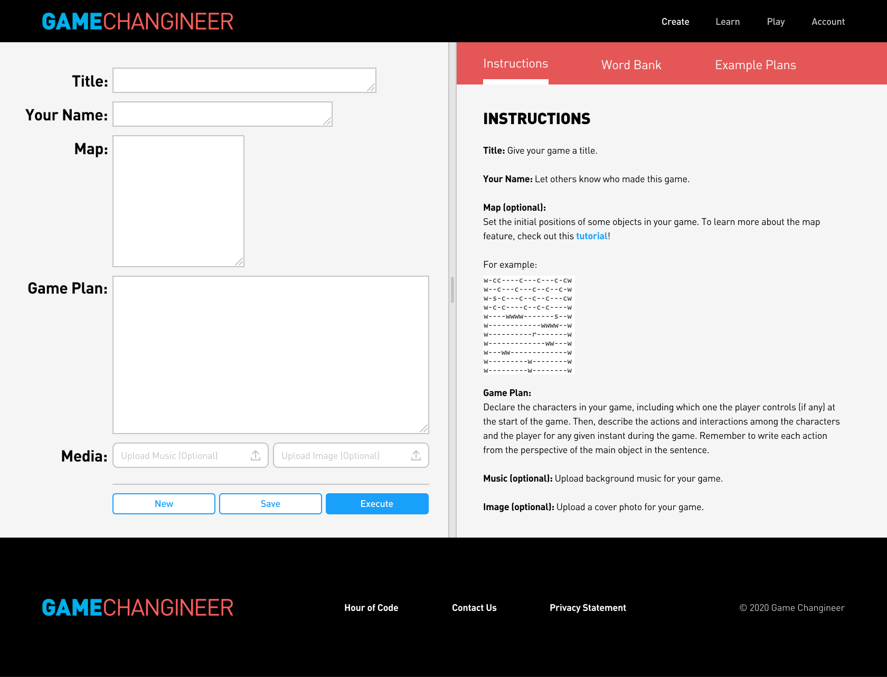REDESIGN
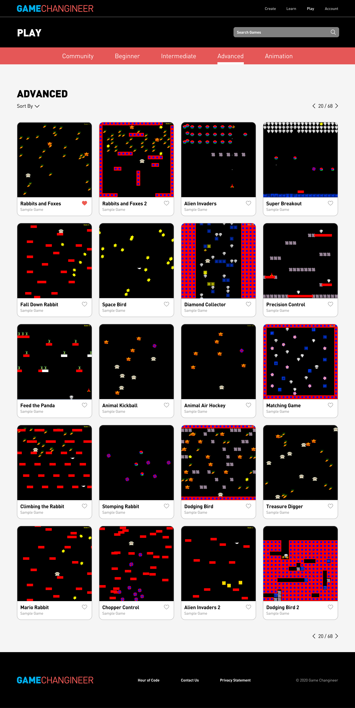ORIGINAL
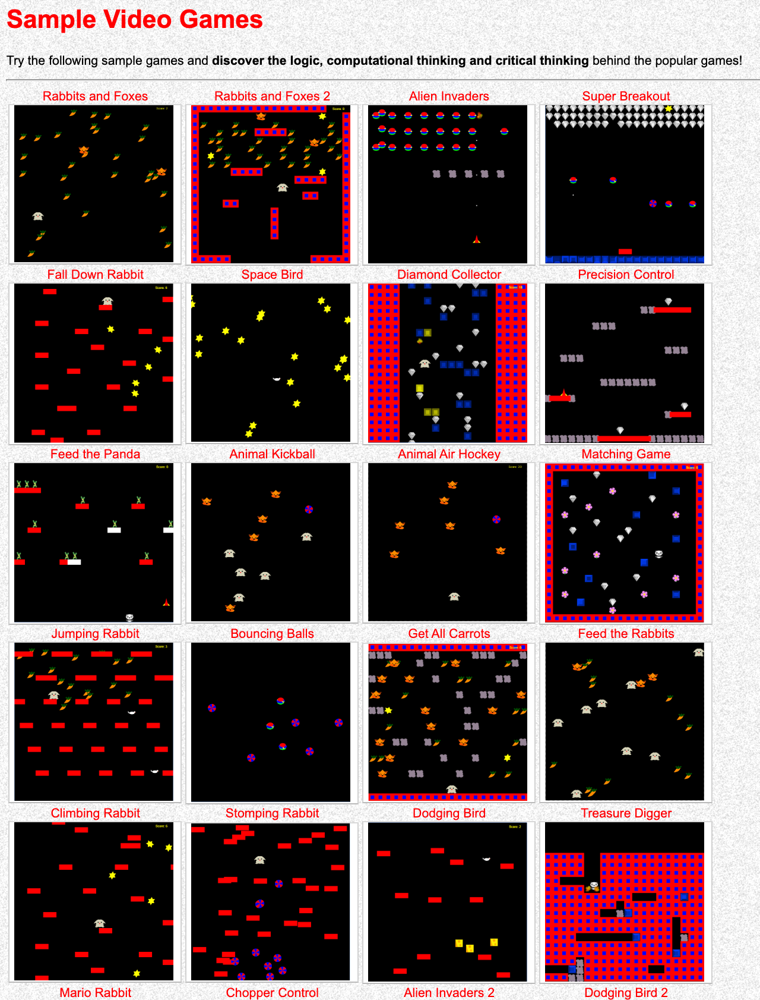Play
I consolidated the sample video games and the games from the community showcase so that all the completed games are in one place for easy reference. I also increased legibility by creating cards for each game with the game titles and subtitles.